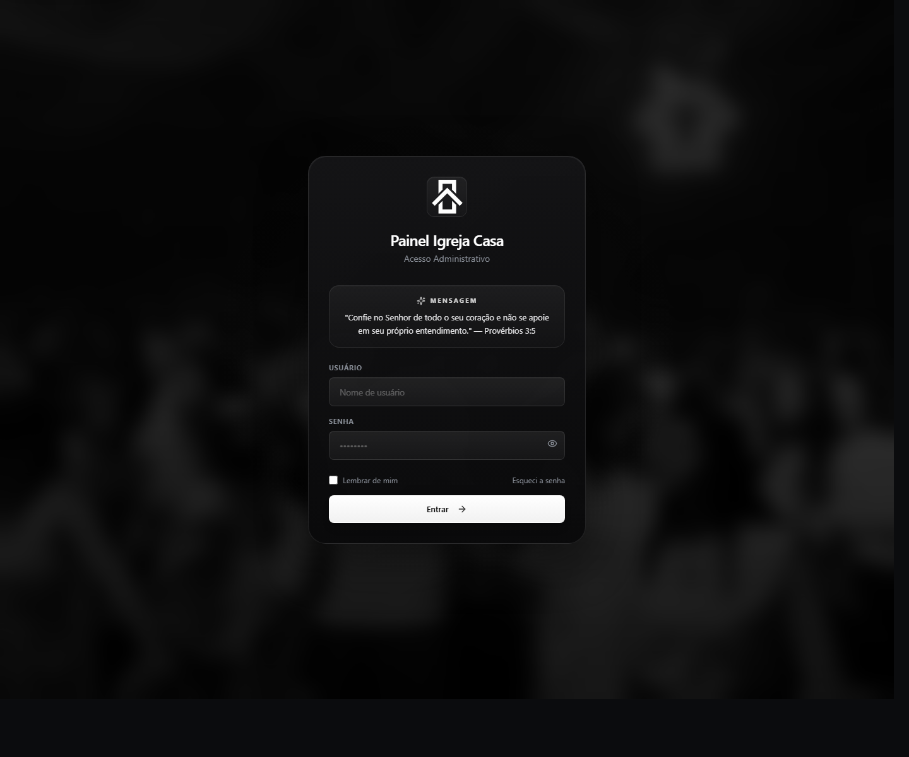
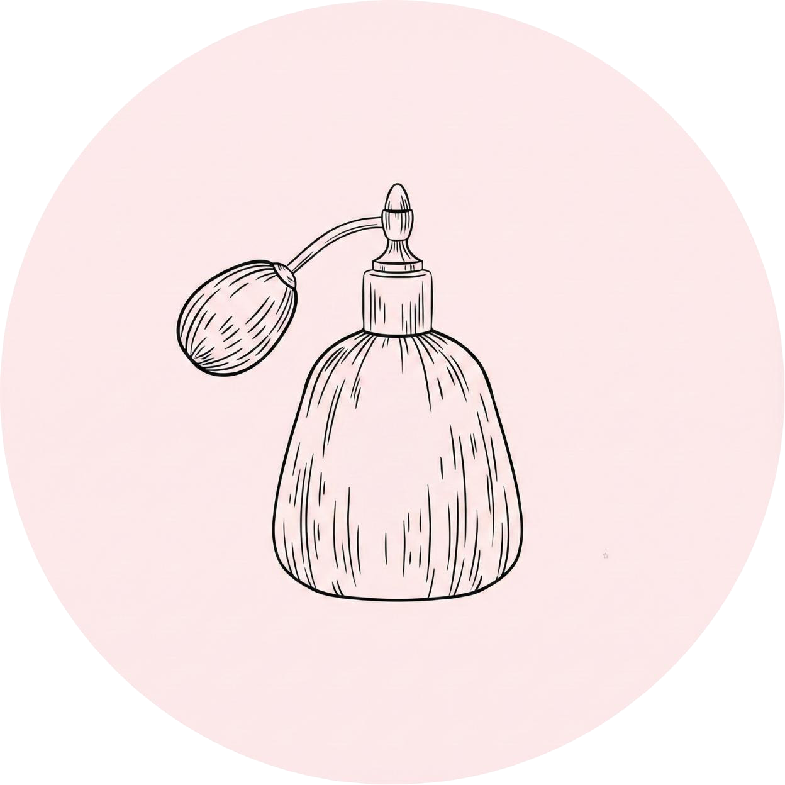

RDP Studio · Goiânia, Brasil
Software para organizar operações e informação.
Na RDP Studio, Marcelo Rodrigues reúne sistemas, automações e ferramentas desenvolvidos para suporte, infraestrutura, análise de dados e rotinas administrativas.

Igreja Casa HubCloudflare Pages · Supabase
RDP Insider
Dados publicados todos os dias
Python, JSON estático e GitHub Actions.
GLPI Automator
Diretórios viram chamados
Automação documentada sem expor o código privado.
preventivas/
├── unidade-01/
│ ├── terminal-01/
│ └── camera-hall/
└── log-auditoria.txt
├── unidade-01/
│ ├── terminal-01/
│ └── camera-hall/
└── log-auditoria.txt
Onde os projetos encontraram uso
Organizações presentes nesta trajetória.
1 / 4
TecnoITLeitura financeira e relatórios Igreja CasaPlataforma administrativaFundação TiradentesExperiência profissional
Igreja CasaPlataforma administrativaFundação TiradentesExperiência profissional

Lume BeautyProjeto presente no acervoProjetos selecionados
Cada projeto abre na experiência que faz sentido.
Ferramentas levam direto à área de uso; produtos abrem a aplicação; trabalhos documentais apresentam contexto e decisões.
Sobre Marcelo
Infraestrutura e desenvolvimento não aparecem separados na prática.
A trajetória reúne suporte, manutenção, redes, segurança, automação e desenvolvimento. A RDP Studio organiza essas entregas e mostra não apenas a interface final, mas o problema, as restrições e as decisões por trás de cada projeto.
Suporte→Infraestrutura→Automação→Sistemas→Segurança
Ver trajetória, formação e ensinoUm problema concreto é um bom começo.
Contato para conversar sobre automações, sistemas internos, organização de processos, ferramentas web e infraestrutura.